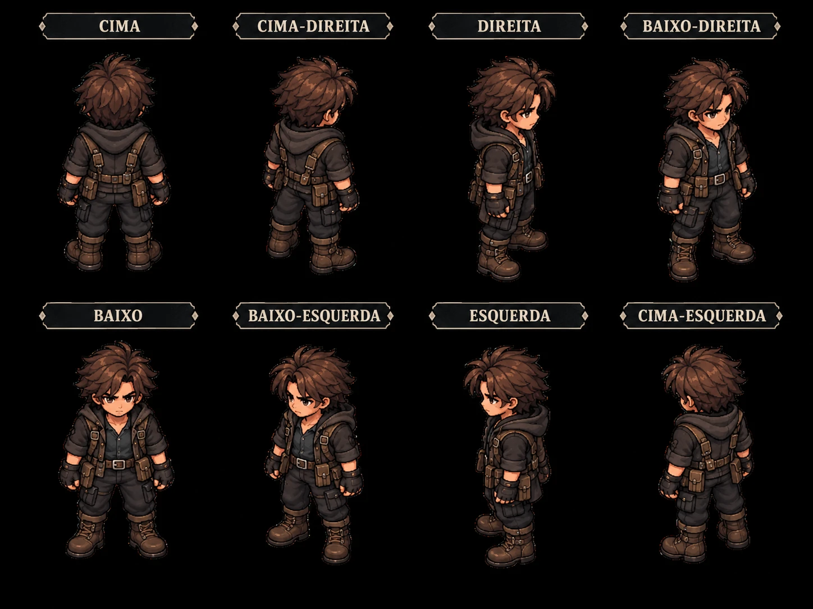

A tela da referência funcionando como tela de videogame: bonita, animada, com cada botão fazendo o que promete e o mapa da sessão no centro.
O MVP é uma tela só: esta. Cada número abaixo é uma parte dela, com o que faz quando você clica e como se mexe. A referência é a imagem inteira, em 1536×1024.
FazNome e subtítulo da campanha (o mestre renomeia clicando). Abas: MAPA é a tela do MVP; as outras mostram “em breve”. Botão de clima (luz normal, piscando ou apagão, e névoa). Engrenagem com o menu. Encerrar sessão pede confirmação num bilhete.
MexeAba levanta ao passar o mouse; o fio vermelho corre até a aba escolhida; fita e sublinhado aparecem na aba ativa; nome datilografado; símbolo pulsando.
FazAs 7 cenas da mansão com miniatura. Clicar troca a cena do tabuleiro. A miniatura passa a ser um recorte da própria imagem da cena.
MexeUm pincel vermelho pinta a cena atual e a tinta da anterior desbota; a miniatura acende; o tabuleiro dissolve para a cena nova.
FazPlanta do andar com o cômodo atual em vermelho e um ponto colorido para cada personagem. Clicar num cômodo troca a cena. Para ficar igual à referência, a planta vira a imagem desenhada (sem o vermelho, que o app pinta por cima).
MexeUm lápis de cor hachura o cômodo novo; etiqueta com o nome ao passar o mouse.
FazLista com caixinhas. O mestre marca, desmarca, cria e apaga objetivos. Cada conclusão entra nas últimas ações.
MexeUm lápis risca o check; ao desmarcar, a borracha apaga e solta farelos.
FazA cena pintada com os personagens. Clicar num personagem (ou no retrato dele) passa a comandá-lo; clicar no chão faz ele andar desviando dos móveis. A lupa marca objetos com pista ou itens; clicar abre o objeto no painel. Andar até uma porta leva à cena vizinha.
MexePersonagens respiram e andam com passo; anel colorido no pé; marca de destino no chão; anel âmbar no objeto clicado; velas e lamparinas tremulando; poeira e névoa leves; a câmera desliza.
FazFoto (recorte da cena em volta do objeto), nome, descrição e as abas Descrição, Interações e Itens. Itens com peso e tipo, botão Entregar ou “Entregue para”. Interações com DT; o mestre registra quem tentou e o resultado.
MexeA foto revela como polaroid; o texto é datilografado; o contorno vermelho da aba é desenhado a lápis; um carimbo SUCESSO ou FALHA bate no cartão.
FazCada personagem com retrato, carga atual, barra verde, amarela ou vermelha, carga depois da entrega e o aviso quando passa do limite. Os números batem com a referência: 6/10 → 8/10, 9/10 → 11/10, 4/12 → 6/12, 10/10 → 12/10.
MexeA barra enche, os números contam, o item voa em arco até o retrato e um “+2” sobe; o aviso de excesso treme.
FazArthur, Cora, Miguel e Teps com a faixa da cor de cada um. Clicar comanda o personagem e centraliza a câmera nele.
MexeO retrato respira e pisca; o cartão inclina seguindo o mouse; brilho na cor do personagem quando ativo; balança enquanto ele anda; pulinho ao receber um item.
FazOs itens da cena que ainda não foram entregues (até 7). Clicar abre o objeto que guarda o item. Os ícones pintados saem da referência.
MexeOs ícones surgem um a um; ao passar o mouse, uma etiqueta pendurada mostra nome e peso.
FazO registro da sessão: hora, ícone e texto de cada entrega, teste e objetivo.
MexeA linha nova abre espaço, a hora é carimbada e o texto é datilografado.
Cada cena é uma imagem pintada. O app coloca camadas por cima dela, de baixo para cima:
No MVP eu configuro a grade, os objetos e as portas das 7 cenas. O editor para você montar cenas novas sozinho vem depois do MVP.
É isto que separa o app da referência hoje. Coloque os arquivos na pasta arte, dentro da pasta do projeto, com os nomes da tabela. Marque aqui o que já estiver pronto (fica salvo neste navegador).
| Arte | Quem faz | Formato | Arquivos |
|---|---|---|---|
| Você, no ChatGPT | 1536×1024, PNG ou WebP, sem personagens, ícones, textos ou interface | cena-hall, cena-sala-de-estar, cena-biblioteca, cena-escritorio, cena-cozinha, cena-quarto, cena-jardim | |
| Você, no ChatGPT | 512×512, fundo escuro liso; a versão de olhos fechados idêntica à outra | retrato-arthur, retrato-arthur-olhos-fechados (e o mesmo para cora, miguel e teps) | |
| Você | 8 poses numa grade 4×2, mesmo tamanho, pés alinhados, fundo preto ou transparente, sem textos | sprite-arthur, sprite-cora, sprite-miguel, sprite-teps | |
| Você, no ChatGPT (opcional) | Recorte da planta da referência, todos os cômodos cinza | planta-1-andar | |
| Eu, recortando da referência | Faca, diário, chave, carta, frasco, fita e caixa | (automático) | |
| O app | Recortes das imagens das cenas | (automático) |

A sua folha de 8 direções já está no formato certo. Só falta tirar os textos das poses. A ordem é a mesma da imagem: na primeira linha CIMA, CIMA-DIREITA, DIREITA, BAIXO-DIREITA; na segunda BAIXO, BAIXO-ESQUERDA, ESQUERDA, CIMA-ESQUERDA.
Um quadro por pose basta. A respiração e o passo são animados pelo app. Se um dia quiser caminhada de verdade, é só mandar quadros extras.
Anexe sempre a imagem da referência (docs/ref-mapa.webp) na conversa. Gere algumas versões e escolha a melhor. Se o estilo fugir, anexe a referência de novo e peça “mais parecido com a referência”. O piso precisa ter o mesmo ângulo em losango da referência: é por ele que eu alinho a grade de caminhada.
Use a imagem anexada. Refaça só o escritório do tabuleiro central, exatamente igual (mesma câmera, móveis e luz), mas sem os quatro personagens e sem o ícone da lupa. Complete as partes que estão cobertas pelos papéis da interface. Não desenhe textos nem interface. Imagem horizontal 1536×1024, com o cômodo centralizado na escuridão total.
Use a imagem anexada como referência de estilo: pixel art pintada, vista isométrica, clima de investigação paranormal, luz quente de velas e lamparinas e sombras profundas. Desenhe o cômodo [CÔMODO] de uma mansão antiga abandonada, com a mesma câmera isométrica e o mesmo tamanho de piso do tabuleiro da referência. Mostre só as duas paredes do fundo (esquerda e direita) e o chão, com o cômodo flutuando na escuridão total. Detalhes: [DETALHES] Deixe o centro do chão livre para os personagens andarem. Não desenhe personagens, pessoas, ícones, textos nem interface. Imagem horizontal 1536×1024, com o cômodo centralizado ocupando cerca de 60% da largura.
porta dupla, escadaria, cabideiro, lustre apagado, retratos
lareira, sofás cobertos por lençóis, relógio de pêndulo
estantes altas, escada, mesa de leitura, globo
fogão a lenha, farinha espalhada, cepo sem a faca maior
cama de dossel, guarda-roupa, espelho rachado, baú
muro de pedra, canteiros revirados, estátua, névoa
Use a imagem anexada como referência: os retratos da parte de baixo da tela. Desenhe o retrato de [NOME]: [DESCRIÇÃO]. Busto, de frente, olhando para a câmera, fundo escuro liso, no mesmo estilo de pixel art pintada. Imagem quadrada 512×512, sem texto. Depois, na mesma conversa: Agora a mesma imagem exatamente igual, só com os olhos fechados.
cabelo comprido, barba, casaco marrom
cabelo vermelho comprido, roupa escura
cabelo preto, óculos redondos, moletom branco
cabelo branco bagunçado, roupa escura
Use as imagens anexadas como referência: os personagens pequenos do tabuleiro e a minha folha de 8 direções. Desenhe [NOME] ([DESCRIÇÃO]) em pixel art chibi, corpo inteiro, em 8 poses numa grade de 4 colunas por 2 linhas. Primeira linha: CIMA, CIMA-DIREITA, DIREITA, BAIXO-DIREITA. Segunda linha: BAIXO, BAIXO-ESQUERDA, ESQUERDA, CIMA-ESQUERDA. Todas do mesmo tamanho, com os pés na mesma altura, fundo preto liso e nenhum texto.
anexe a referência e a folha de 8 direções
anexe a referência e a folha de 8 direções
anexe a referência e a folha de 8 direções
anexe a referência e a folha de 8 direções
Na imagem anexada (recorte da planta do 1º andar), deixe todos os cômodos cinza, removendo o destaque vermelho, sem mudar mais nada.
Na ordem. Cada etapa termina com algo que você pode ver e aprovar.
Quem: você
Gerar as imagens da seção Artes. A primeira que importa é a do Escritório: com ela eu já começo.
Pronto quandoos arquivos estão na pasta arte.
Quem: eu
Tabuleiro por imagem com a cena do Escritório: grade alinhada ao piso, colisão, lupa na escrivaninha abrindo o painel e os 4 personagens andando. Enquanto os sprites não chegam, eles usam os bonecos atuais.
Pronto quandoa foto do app, ao lado da referência, mostra o mesmo tabuleiro.
Quem: eu
Lista de cenários e planta trocando a cena, portas levando de uma cena a outra, miniaturas e fotos do painel recortadas das imagens.
Pronto quandodá para andar do Hall de Entrada até o Jardim passando pelas portas.
Quem: eu
Retratos respirando e piscando, sprites respirando e com passo, velas tremulando, poeira, recortes de frente e ícones pintados.
Pronto quandoa tela parada por 10 segundos continua viva, como tela de jogo.
Quem: eu, com a sua revisão
Sons, bilhetes de confirmação, revisão lado a lado em 1536×1024, limpeza do código antigo e versão salva no GitHub.
Pronto quandocada botão da tela faz o que promete e você aprova a comparação com a referência.
Minha sugestão está em cada item. Se concordar com tudo, é só dizer “aprovado”.
As abas Combate, Interlúdio, Personagens, Itens e Notas mostram “em breve” no MVP.
Sugestão: sim. Cada uma vira um projeto depois.
Cenas, retratos, sprites e planta você gera no ChatGPT com os textos desta página; os ícones eu recorto da referência.
Sugestão: sim. Dá para trocar os ícones por versões maiores depois.
A tela é desenhada para 1536×1024. Em telas 16:9 (como 1920×1080), o tabuleiro fica mais largo e o resto igual.
Sugestão: sim. Use o Chrome em tela cheia (F11) para ficar com cara de jogo.
Sprites com 8 poses e um quadro por pose; respiração e passo animados pelo app.
Sugestão: sim. Quadros de caminhada entram depois, se você quiser.
Eu configuro a grade, os objetos e as portas das 7 cenas do MVP.
Sugestão: sim. O editor de cenas vem depois do MVP.
Personagens só passam atrás dos móveis que eu recortar (estantes, colunas). Atrás dos outros, as casas ficam bloqueadas.
Sugestão: sim. Evita personagem aparecendo por cima de móvel.
A campanha de exemplo continua sendo Sombras de Arvendal, na Mansão Alvarez, com Arthur, Cora, Miguel e Teps.
Sugestão: sim, porque é a referência. Nomes, cenas e itens podem mudar depois.